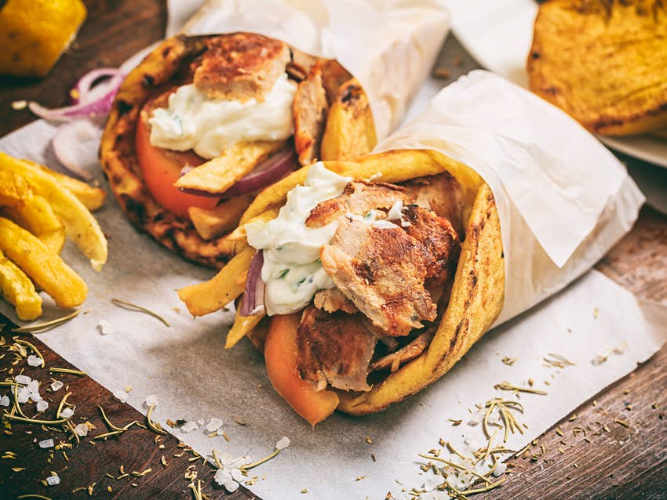

Gyros Souvlaki

The Tzatziki Beast
Souvlaki, marinated meat grilled on a skewer, is a Greek fast food. Pork is traditionally used to make the dish, but chicken, lamb, and beef are also common
You can enjoy souvlaki straight off the skewer as a kebab, in a warm pita with your favorite toppings, or over a bed of fresh veggies
Ingredients
- 1 pork tenderloin, cut into strips
- 1 clove of garlic, chopped
- 1 or 2 red onion, sliced
- 3 or 4 tbsps of olive oil
Steps
- Mix into a large bowl the tenderloin (cut into strips), the garlic, the red onion, 3-4 tbsp of olive oil, 1-2 tbsp of red wine vinegar, some thyme, some rosemary, and mix
- In a (very hot) large non-sticking pan, add the tenderloin along with the ingredients of the marinade, and sauté for 1 minute on each side
- To prepare the tzatziki sauce for the pork gyros, pour in a food processor the olive oil and garlic and blend until the garlic is diluted
- Into a large bowl, grate the cucumber, season with salt and pepper and leave it aside for 10 minutes
- Into a bowl, add the cucumber, the blended garlic and oil, the yogurt, 1-2 of red wine vinegar, salt and pepper and mix
- Place a large pan (upside down) at the bottom of the oven, place the pita breads on top, and bake in preheated oven at 250C for about 1 minute